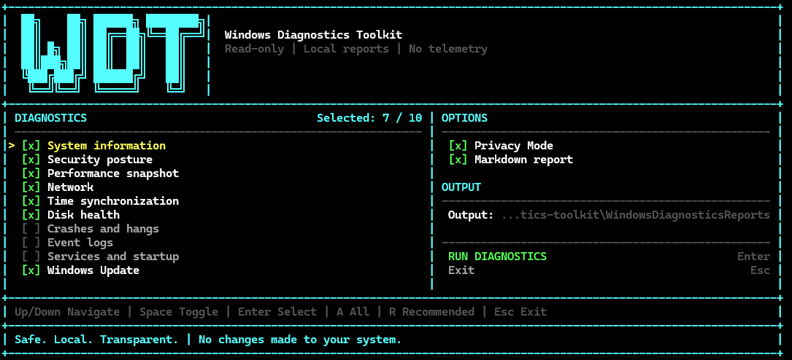
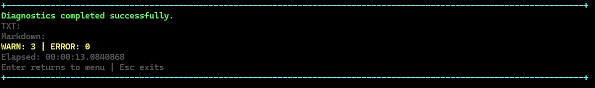

Release ZIP
RecommendedVerify the archive with its SHA-256 checksum, then extract it and run Invoke-WindowsDiagnostics.ps1.
SHA-256 3d8072b9d855699790e11239806be7fe4c1da21fd0ef9e907b4558802c339f16
Collect system health, network settings and recent failures in one read-only pass. Review the findings or attach the relevant evidence to a support ticket.
.\Invoke-WindowsDiagnostics.ps1 -All -PrivacyModeBitLocker volume not protected
Local clock source reported
Service reported exit code 1067
No findings
Verify the archive with its SHA-256 checksum, then extract it and run Invoke-WindowsDiagnostics.ps1.
SHA-256 3d8072b9d855699790e11239806be7fe4c1da21fd0ef9e907b4558802c339f16
[!] This command runs run.ps1 from wdt.digital. Inspect the script first on managed or sensitive systems.
PS> irm https://wdt.digital/run.ps1 -OutFile .\wdt-run.ps1 PS> notepad .\wdt-run.ps1 PS> .\wdt-run.ps1
PS> git clone https://github.com/0x0bug/windows-diagnostics-toolkit.git PS> cd windows-diagnostics-toolkit PS> .\Invoke-WindowsDiagnostics.ps1
PS> $expected = '3d8072b9d855699790e11239806be7fe4c1da21fd0ef9e907b4558802c339f16' PS> (Get-FileHash .\windows-diagnostics-toolkit-v0.2.0-beta.3.zip -Algorithm SHA256).Hash.ToLowerInvariant() -eq $expected
The tagged release binds the archive to a published version. SHA-256 detects whether the downloaded ZIP differs from the expected bytes; it does not establish who produced the file. The ZIP checksum does not authenticate bootstrap code already passed to iex.
Select modules and run a sample collection. This simulation runs only in the browser.
Select diagnostics
Options
>Output: .\WindowsDiagnosticsReports
Privacy Mode replaces common identifiers. Markdown export adds another format.
Output
↑ ↓ navigate · Space / Enter toggleA all · R recommended · Enter on Run
OK — no findings · WARN — review recommended · ERROR — serious finding or execution failure


Select modules, collect snapshots and write reports to a predictable location from PowerShell.
PS> .\Invoke-WindowsDiagnostics.ps1 -All -PrivacyMode -ExportMarkdown PS> .\Invoke-WindowsDiagnostics.ps1 -Module System,Network -OutputDirectory .\Reports
-Module System
Windows version and build, hardware, uptime and core system context.
-Module Performance
CPU, memory, pagefile, pressure indicators and top processes.
-Module Network
Adapters, IP, DNS, DHCP, routes, gateways, proxy and reachability.
-Module Security
Defender, Firewall, Secure Boot, TPM and BitLocker.
-Module Disk
Physical disks, volumes, free space and warning thresholds.
-Module Crashes,Events
Crashes, hangs, BugChecks, Event Log evidence and dump metadata.
-Module Services
Services, startup entries and scheduled tasks.
-Module Updates,Time
Updates, pending reboot indicators and Windows Time state.
Every report opens with a findings summary. Severity is based on documented signal rules rather than the raw Windows event level alone.
Generate a report that can be attached to a ticket or shared with another engineer without exposing common host, user and network identifiers.
ComputerName : DESKTOP-4F1QK UserName : a.ivanov IPv4Address : 192.168.1.24 MacAddress : B4-2E-99-0C-7A-11 DeviceId : S-1-5-21-3402…
ComputerName : <HOST-1> UserName : <USER-1> IPv4Address : <IP-1> MacAddress : <MAC-1> DeviceId : <ID-1>
[!] Program names, dump-file names and Event Log messages can still contain sensitive information. Review every report before sharing it.
Collect consistent evidence and review Privacy Mode output before attaching it.
Open guide →Compare current pressure, pagefile state and the highest-impact processes.
Open guide →Review grouped Event Log, Reliability Monitor and dump metadata.
Open guide →Compare adapters, routes, gateways, name resolution and proxy state.
Open guide →No for the standard collection. Some Windows sources expose less detail without elevation; WDT reports unavailable data and continues where possible.
No. Production diagnostics collect and report state without changing services, registry settings, firewall rules or network configuration.
The interactive interface writes to .\WindowsDiagnosticsReports by default. Command-line mode writes to the current directory unless -OutputDirectory is provided.
It replaces common host, user, network and device identifiers with typed tokens. Program names, dump-file names and arbitrary sensitive Event Log text can remain.
No. WARN identifies collected state worth reviewing. Module execution failures are reported separately and can produce a non-zero exit code.
WDT is maintained by 0x0bug as an open-source Windows diagnostics project. Review the source, tests, security policy and release history before using it in a managed environment.